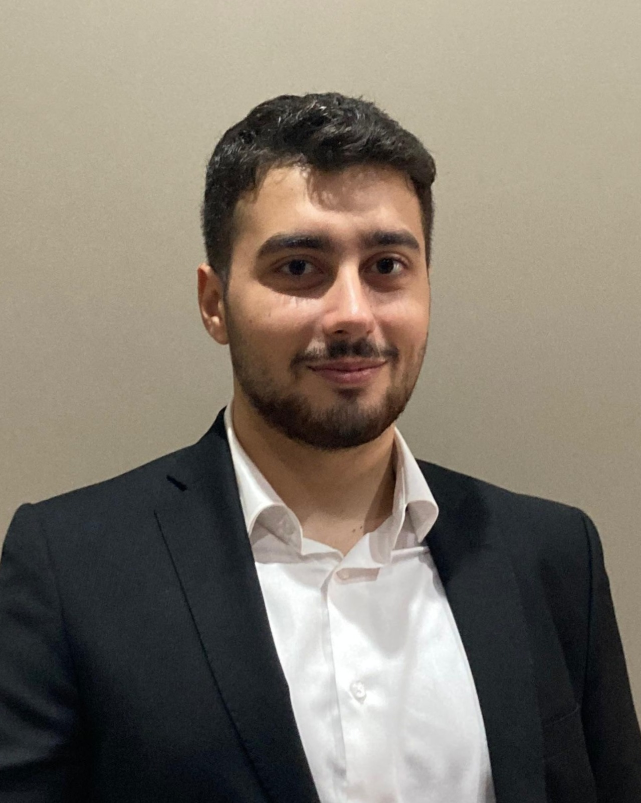

Merhaba! Ben Atahan Ata.
bir Full Stack .NET geliştirici adayıyım.
Yazılım geliştirmeye olan ilgimle birlikte, eğitim sürecim boyunca pek çok proje geliştirerek hem front-end hem de back-end alanlarında kendimi sürekli geliştirdim.
Gerçekleştirdiğim staj ve proje deneyimleri, bana yazılım geliştirme sürecinin tüm aşamalarında değerli tecrübeler kazandırdı.
Bu portfolyoda; geliştirdiğim web uygulamalarını, masaüstü projelerimi ve kullandığım teknolojileri bulabilirsiniz. Amacım, teknoloji dünyasında sürekli öğrenmeye, üretmeye ve kendimi geliştirmeye devam etmek.